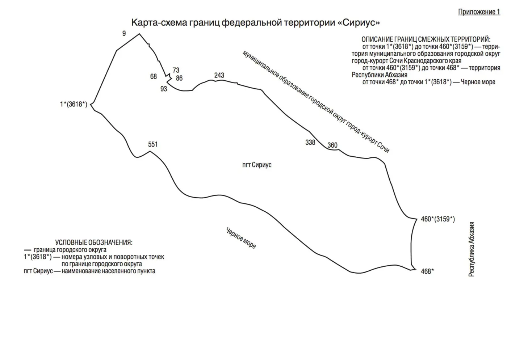

Конституция Российской Федерации, статья 67, часть 1. Редакция 2020 года
«На территории Российской Федерации в соответствии с федеральным законом могут быть созданы федеральные территории».
Этой фразы не было в Конституции до 14 марта 2020 года. Первой такой территорией стал «Сириус».

Глава двенадцатая
2020
«Сириус»
Олимпийские здания не опустели: в них стали учить. А потом у этой земли появился особый закон.
Федеральная территория «Сириус»

Образовательный центр «Сириус». Вечер, июль 2024
Фото: Lesless, 2024, CC BY-SA 4.0
Граница федеральной территории «Сириус» описана в приложении 2 к закону № 437-ФЗ двенадцатью отрезками общей длиной 19 625 м: по левому берегу Мзымты, вдоль дороги А-147, по улицам Каспийской и Урожайной, по середине реки Псоу, по урезу воды Чёрного моря и вокруг волноломов порта. Площадь внутри — около 14 км². На снимке 2001 года в тех же границах поля и теплицы.


Снимки Landsat 8 (15.08.2019) и Landsat 7 (6.09.2001): USGS / NASA, общественное достояние. Контур: © участники OpenStreetMap, разрезан на отрезки закона пропорционально длинам, стыки приблизительны. Текст: закон № 437-ФЗ, приложение 2
Что это
«Сириус» — образовательный центр для одарённых школьников в бывших олимпийских зданиях у моря. С декабря 2020 года вся земля вокруг — первая в России федеральная территория (и, по состоянию на 2026 год, единственная).
На программы по науке, искусству и спорту сюда приезжают дети 10–17 лет со всей страны, по данным «Википедии» — около 800 человек в месяц; дорога и жильё для них бесплатны. У территории свой Совет и своя администрация.
Как это появилось
От фонда до закона за шесть лет
22.12.2014
Учёные, деятели культуры и спортсмены основали образовательный фонд «Талант и успех». Попечительский совет возглавил президент.
2015
По инициативе Владимира Путина на базе олимпийской инфраструктуры открылся центр «Сириус». Позже здесь появились Президентский лицей, музыкальная школа, университет, колледж и научно-технологический центр.
1.02.2020
Правительство присвоило месту название «Сириус».
14.03.2020
Поправка к Конституции (закон № 1-ФКЗ) добавила в статью 67 новое понятие — .
3.04.2020
Краевой закон образовал Сириус: посёлок между Мзымтой и Псоу отделился от Сочи.
22.12.2020
Закон № 437-ФЗ приняли за несколько недель: в декабре его приняла Дума и одобрил Совет Федерации, 22 декабря президент подписал его, и в тот же день он вступил в силу. Закон называет территорию общегосударственного стратегического значения.
2021 и 2026
17–19 сентября 2021 года жители впервые выбрали Совет. В сентябре 2026 года прошло трёхдневное голосование за Совет второго созыва. По закону длится до 31 декабря 2030 года.
Как устроена власть
Совет территории: 17 мест
Совет избирают на 5 лет. Он назначает главу администрации и утверждает , а законы Краснодарского края действуют здесь только там, где край передал полномочия.
- 9 избирают жители
- 3 назначает президент
- 3 назначает правительство
- 1 назначает губернатор Краснодарского края
- 1 глава администрации
Статья 12 закона № 437-ФЗ. Жители выбирают больше половины мест: 9 из 17.

«Федеральной территорией „Сириус“ признается имеющее общегосударственное стратегическое значение публично-правовое образование, в котором… в целях… сохранения олимпийского спортивного, культурного и природного наследия, создания благоприятных условий для выявления, самореализации и развития талантов, реализации приоритетов научно-технологического развития Российской Федерации устанавливаются особенности организации публичной власти».
2020
«На территории Российской Федерации в соответствии с федеральным законом могут быть созданы федеральные территории.»
Конституция Российской Федерации, статья 67, часть 1 (поправка 2020 года)
Сегодня
Город, где главное — школа
На что посмотреть
Где проходит граница, которую не видно
7–9
Граница по улице
По закону граница идёт по северо-восточной стороне улиц Каспийской и Урожайной. Как пишет «Википедия», чётные дома остались в Сочи, а нечётные вошли в «Сириус»: по одной улице проходят границы двух городов.
10
Река Псоу
На востоке граница идёт по середине Псоу от автомобильного моста до моря. Здесь сходятся «Сириус», город Сочи и Абхазия.
12
Волноломы порта
Последний отрезок обходит с юго-запада монолитные волноломы у устья Мзымты: сооружения в воде тоже входят в территорию.
★
Подсветка корпусов
Корпуса центра стоят у самого моря, ярусы выстроены волнами, а вечером дома подсвечены фиолетовым: таким центр выглядит на фотографиях.
Значение для Сочи
У Сочи появился сосед со своей властью: на Имеретинской низменности теперь не курортный район, а отдельная территория, где рядом с пляжем главное — школа, университет и научный центр.
Значение для России
Новая форма устройства страны. Федеральной территории нет в списке (статья 65 Конституции): её создают отдельным законом.
Раздел курса: 4. Политическое устройство России
Ценность: гражданственность
Факт, который мало кто знает
Если у берега «Сириуса» когда-нибудь намоют искусственную сушу, она сама станет частью федеральной территории. Так прямо записано в законе.
«В случае создания искусственных земельных участков в примыкающих к федеральной территории „Сириус“ внутренних морских водах Российской Федерации и в территориальном море Российской Федерации такие земельные участки включаются в состав территории федеральной территории „Сириус“» (закон № 437-ФЗ, часть 2 статьи 7). На снимке — карта-схема из приложения 1 к закону, общественное достояние
Что вы узнали
Три вещи о «Сириусе»
Новая форма устройства
Федеральных территорий не было в Конституции до 2020 года. «Сириус» создан отдельным законом № 437-ФЗ, а 9 из 17 мест в его Совете выбирают жители.
Граница в тексте закона
Она описана точка за точкой, 19 625 м. Изменить её можно только поправкой к закону, а искусственная суша у берега попадает в территорию сама.
Наследие Игр учит
Стадионы остались спортивными, а здания центра с 2015 года учат школьников. Закон прямо называет цели: сохранить олимпийское наследие и развивать таланты.
Проверьте себя Чем федеральная территория отличается от Краснодарского края?
Край — субъект федерации из списка статьи 65 Конституции. Федеральная территория в этот список не входит: её власть устроена отдельным федеральным законом, а законы края действуют там, только где край передал полномочия.
Источники, права на кадры и что осталось непроверенным
Источники
- Федеральный закон от 22.12.2020 № 437-ФЗ «О федеральной территории „Сириус“» (kremlin.ru, статьи 2, 4–8, 12, 14, 47 и приложения 1–2)
- Официальное опубликование: Федеральный закон от 22.12.2020 № 437-ФЗ, номер 0 001 202 012 220 082 (publication.pravo.gov.ru)
- Конституция Российской Федерации, статьи 65 и 67 (kremlin.ru)
- Официальный сайт федеральной территории «Сириус»: «О ФТ „Сириус“», «Архитектура и градостроительство», новости
- Образовательный центр «Сириус» — официальный сайт
- Сириус (посёлок городского типа) — Википедия
- Сириус (образовательный центр) — Википедия
- Имеретинская низменность — Википедия
- Административно-территориальная единица с особым статусом — Википедия
- Почтовая марка № 3453 «Образовательный центр „Сириус“» — каталог АО «Марка»
- OpenStreetMap: граница «Сириус» (relation 11 865 346), ODbL
- USGS EROS: Data citation (Landsat)
Кадры
- Центр «Сириус» вечером, июль 2024: Lesless, 2024, CC BY-SA 4.0, Wikimedia Commons.
- Корпус «Сириуса» днём, июль 2024: Lesless, 2024, CC BY-SA 4.0, Wikimedia Commons.
- Двор центра, июль 2024: Lesless, 2024, CC BY-SA 4.0, Wikimedia Commons.
- Олимпийский проспект, ноябрь 2024: Voltmetro, 2024, CC BY-SA 4.0, Wikimedia Commons.
- Карта-схема границ федеральной территории «Сириус»: Государственная Дума РФ; Федеральный закон от 22.12.2020 № 437-ФЗ, приложение 1 (официальный документ), общественное достояние.
- Марка «Образовательный центр „Сириус“», 2025: Почта России, АО «Марка»; художник-дизайнер Н. Карпова, общественное достояние.
- Граница на спутниковом снимке: Landsat 8 OLI (15.08.2019) и Landsat 7 ETM+ (6.09.2001), USGS / NASA; контур границы — © участники OpenStreetMap (relation 11 865 346, ODbL), разрезан на 12 отрезков приложения 2 пропорционально их длинам, общественное достояние.
Что мы не смогли подтвердить вторым источником
- Площадь около 14 км² получена нами по контуру OpenStreetMap (13,99 км²); в законе площадь не названа. Длина контура OSM (19 444 м) на 1 % меньше суммы отрезков приложения 2 (19 625 м).
- Разрезание контура OSM на 12 отрезков приложения 2 сделано пропорционально их длинам; стыки отрезков (особенно 11–12 у порта) приблизительны.
- «Единственная в России федеральная территория» — по состоянию на 2026 год: так пишут марка «Почты России» (2025) и «Википедия» (2026); полного перечня не сверяли.
- Даты принятия закона № 437-ФЗ в Думе и одобрения Советом Федерации официальной публикацией мы не сверили, поэтому в тексте указан только месяц; дата подписания (22 декабря 2020 года) — по тексту закона.
- Чётные и нечётные дома Каспийской и Урожайной улиц: сведения «Википедии»; в тексте закона описана только линия по северо-восточной стороне улиц.
- Около 800 детей в месяц: «Википедия»; на официальных страницах такой цифры не нашли.
- В каких именно олимпийских зданиях работает центр, источники не называют; в тексте — «на базе олимпийской инфраструктуры», как в официальных документах.
- Дата распоряжения правительства о названии «Сириус» (1 февраля 2020 года) и дата вступления в силу краевого закона (14 апреля 2020 года) — по «Википедии».
- Итоги голосования в сентябре 2026 года не смотрели: на официальном сайте сообщается только, что трёхдневное голосование завершилось 20 сентября.
- Почтовая марка находится в общественном достоянии по данным Wikimedia Commons; на сайте «Марка» условий использования изображения не нашли.